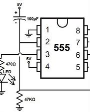

3.1.7 Circuitos de Temporización
los circuitos de temporización son solo eso, una fuente de eventos lógicos para regular y procesar cierta lógica.
Por lo general, tiene un oscilador que se llama reloj y proporciona un tren nominalmente estable de estos eventos.
Entonces puede tener múltiples relojes, cadenas de reloj de relojes divididos, relojes multifásicos, múltiples fuentes de reloj con accionamiento independiente para evitar reflejos, etc. A veces tiene multiplicadores y bucles de fase bloqueada para obtener frecuencias relacionadas. con múltiplos enteros de la frecuencia del reloj primario o incluso multiplicadores N / M donde N y M son enteros.
La frecuencia para uno, los relojes modernos van desde 5 o 10 MHz a 100 de MHz o incluso multi GHz para algunos procesadores. Los relojes también pueden ser lentos, por ejemplo, los relojes de la hora del día generalmente van desde 32.768 Hz o incluso 60 Hz.
Tolerancia de frecuencia: especificada en PPM. Más de 100 PPM (.01%) generalmente requiere un resonador de cristal de algún tipo. Un oscilador RC puede suministrar menos precisión (generalmente alrededor del 5%).
Estabilidad: generalmente especificado en PPM (partes por millón) le dirá qué tan lejos se alejará de los eventos en tiempo real. Se puede especificar tanto a corto como a largo plazo. Los cristales horneados pueden alcanzar niveles muy altos de estabilidad con el tiempo y la temperatura. Los relojes atómicos pueden tener precisión y estabilidad para que dos de ellos funcionen independientemente dentro de 1 ms el uno del otro después de un año.
